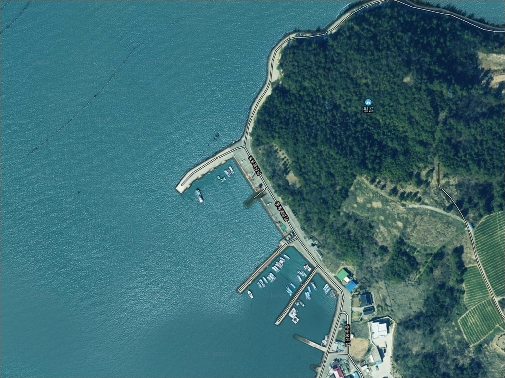
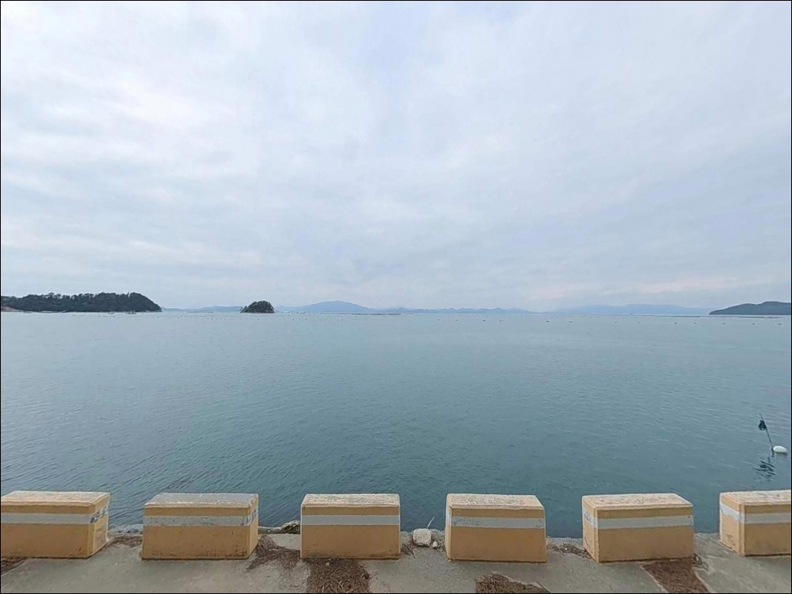
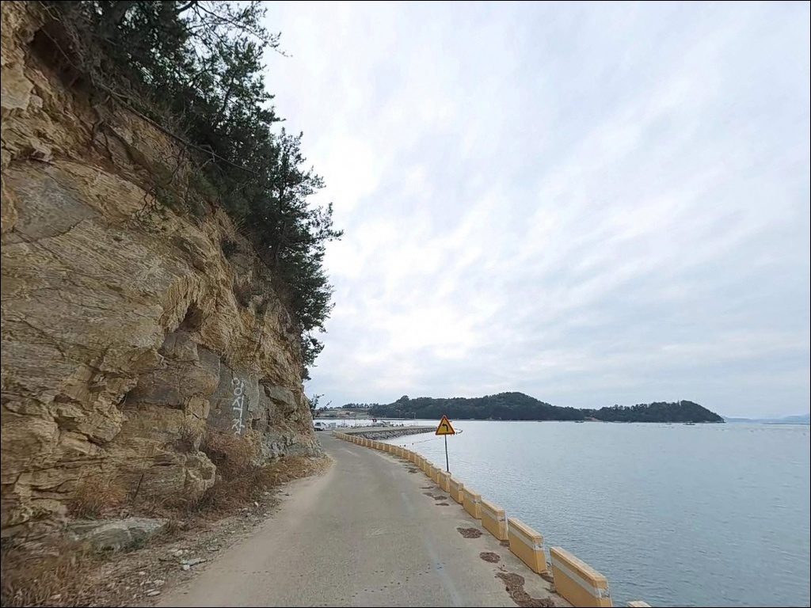
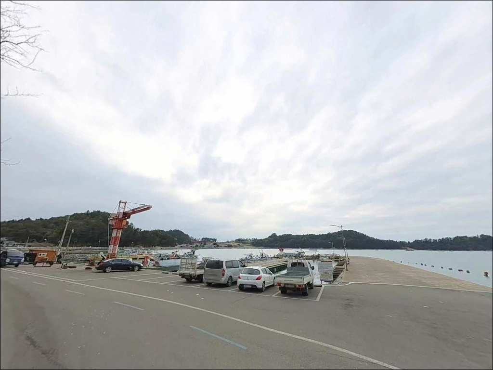
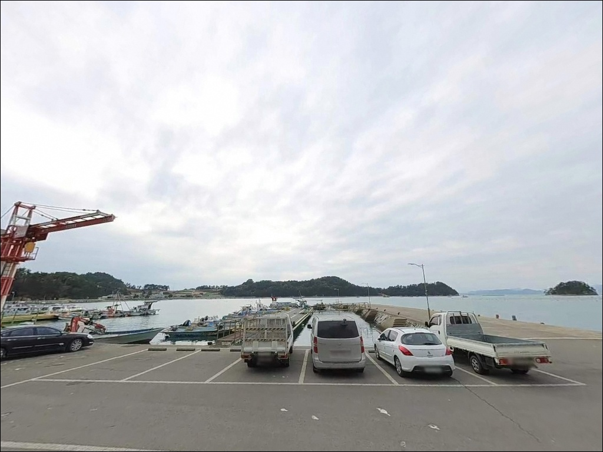
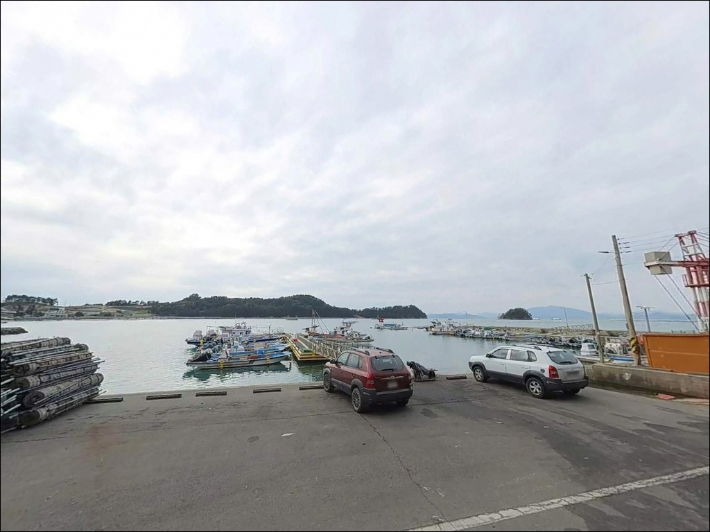
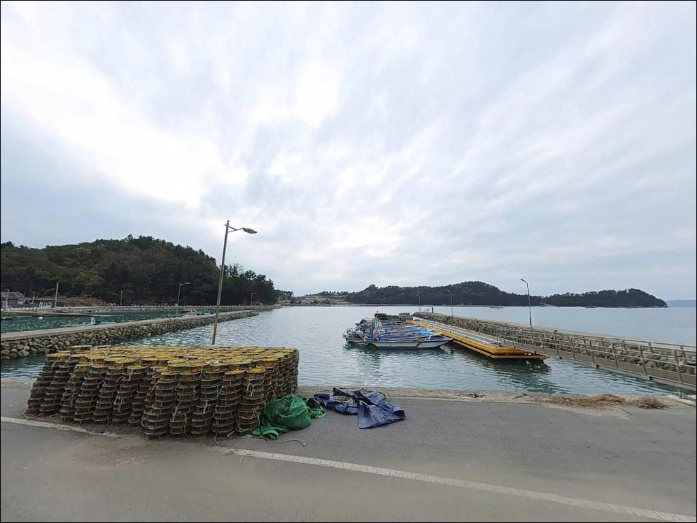
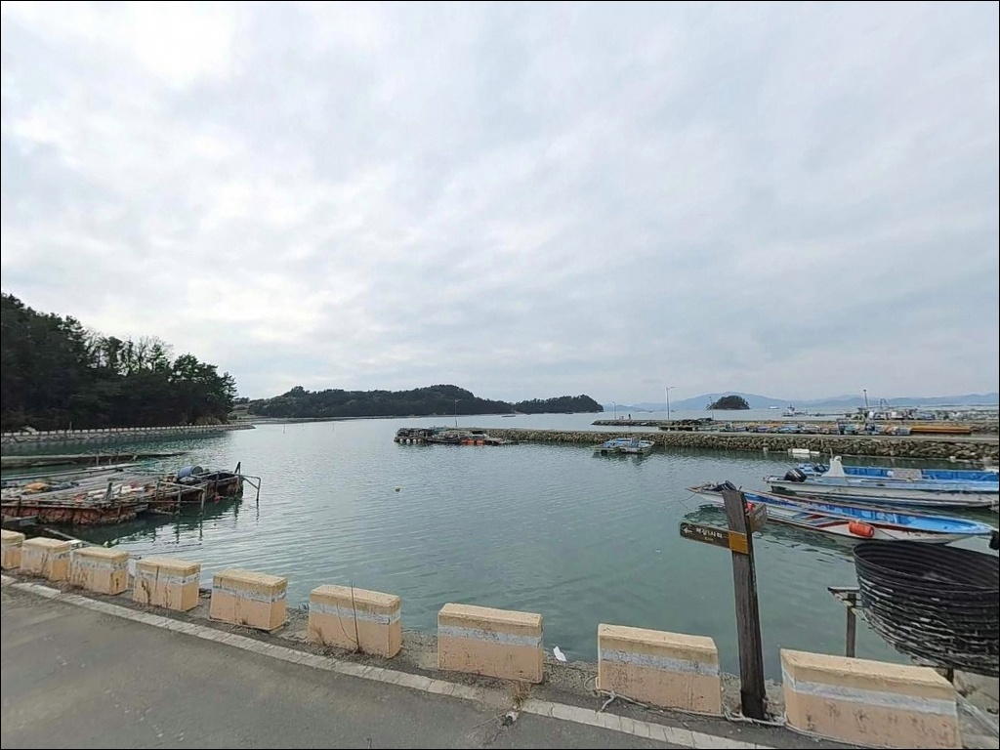
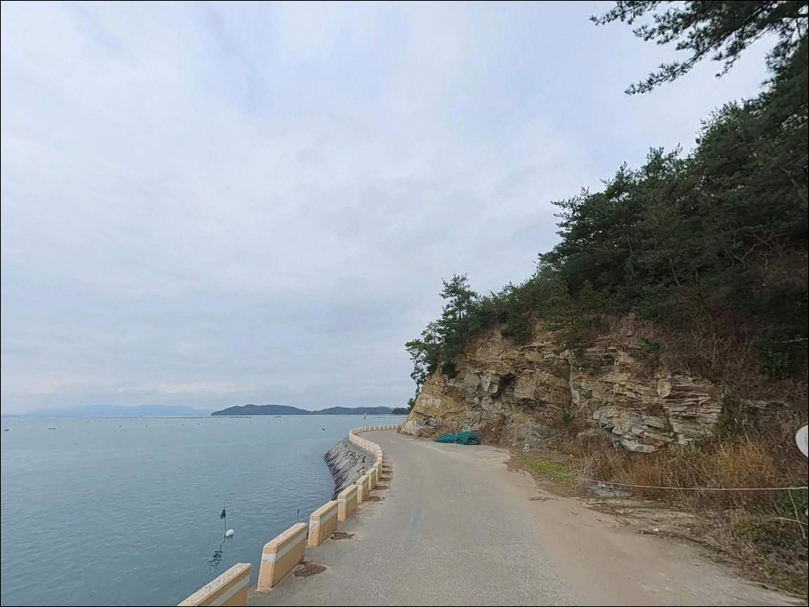

조류 세서 채비 버리기 쉬운 거금도 중동방파제, 조금 정조 타이밍에 노린 외항 입질


포인트 안내
중동방파제
전남 고흥군 금산면 신촌리 산 295-1
사리 전후 물때를 확인하지 않고
거금도 중동방파제에 진입하면
어떤 채비를 써도 조류를 버티기 어려운
상황과 마주칩니다.
외해와 맞닿은 직결 구조 탓에
조류가 세질 때는 봉돌 무게를 올려도
바닥 탐색 자체가 힘들어지는 편입니다.
거금도 신촌리 해안에 자리한 중동방파제는
외해를 향해 뻗은 방파제 구조로,
조류 흐름이 꾸준히 살아 있는 포인트입니다.
같은 거금도 안에서도 수심이 깊은 편에 속하며
찌낚시·원투낚시·에깅을 복수로 운용할 수 있는
지형 조건을 갖추고 있습니다.
이 글은 중동방파제의
진입 동선, 차박 여건, 물때 판단 기준,
낚시 방식별 공략 조건에 집중합니다.
조황 단정이나 특정 어종 보장은
이 글의 범위에 포함되지 않습니다.

1. 진입 동선과 포인트 접근성
중동방파제는 금산 해안로를 따라
진입하는 구조입니다.
방파제 입구까지 포장도로가 이어져 있어
비포장 구간이나 급경사 구간 없이
차량이 방파제 코앞까지 붙는 편입니다.
대형 차량도 진입 자체는 무리 없는 수준이며
캠핑 장비를 실은 SUV도
진입에 큰 어려움은 없습니다.
주차는 방파제 시작 지점의
콘크리트 공터를 활용합니다.
공터 규모가 넉넉한 편이라
복수 차량이 동시에 머무는 상황에서도
회차와 주차에 불편이 적은 구조입니다.
어선 이동 동선과 겹치지 않는 자리를
먼저 확인하고 주차하는 것이 기본입니다.
방파제 주변은 신촌리 어촌 마을이
가깝게 붙어 있는 생활권입니다.
해안 도로와 마을 진입로가 겹치는 구간이 있어
주말 낚시 성수기에는 차량 통행량이
늘어날 수 있습니다.

2. 차박 환경과 야간 체류 여건
방파제 초입 공터는 차박 대기 공간으로
활용할 수 있는 구조입니다.
신촌리 마을과 어느 정도 거리를 두고 있어
야간 프라이버시는
비교적 양호한 편입니다.
다만 포구 특성상 이른 새벽 어선 조업이
시작되는 시간대가 있으므로
주차 위치를 잡을 때 어선 동선을
먼저 살피는 것이 기본입니다.
야간 조명은 항만 내 가로등이
일부 설치되어 있어
완전 암흑은 아닙니다.
그러나 실제 낚시 자리인 방파제 외항 구간은
개별 헤드랜턴이 필수인 환경입니다.
외해 직결 구조라 바람 영향을 받는 날에는
방파제 위 체류 환경이 급격히
달라질 수 있으므로
기상 예보를 당일 아침 다시 확인하는 것이
좋습니다.
낚시 후 하룻밤 조용히 머무는 용도로는
무난한 여건입니다.
단, 차박을 메인으로 계획할 경우
아래 소개하는 거금락 캠핑장을
병행 검토하는 편이 실용적입니다.


3. 주변 편의시설 및 인프라 현황
차량으로 5분 거리의
금산면 소재지에
마트와 식당, 낚시점이 밀집해 있습니다.
반경 3km 이내에서 식수·얼음·낚시 소품
조달이 가능한 인프라 여건으로,
완전 자급이 필요한 오지 포인트와는
접근성에서 차이가 있는 편입니다.
반경 10km 범위 안에는
거금락 캠핑장이 있습니다.
전기·온수·매점 등 캠핑 인프라가
갖춰진 시설형 캠핑장으로,
편의시설을 확실하게 갖추고
머물고 싶은 경우 이 시설을
차박 대안으로 활용할 수 있습니다.
방파제 입구 인근에
공중화장실이 위치합니다.
관리 상태는 시기에 따라 다를 수 있으니
장거리 이동 전 미리 확인하는 것이
좋습니다.

4. 진입 전 반드시 챙겨야 할 준비사항
중동방파제에서 가장 먼저 확인할 것은
물때입니다.
외해와 맞닿은 구조라 사리 전후에는
조류가 상당히 강하게 흐릅니다.
이 시간대에는 무거운 봉돌을 써도
채비가 떠내려가는 수준이 되어
바닥 탐색이 사실상 어려워집니다.
바다타임에서 금산면 일대 물때를
미리 확인하고 조금 전후 또는
만조 전후 타이밍을 맞춰 출발하는 것이
기본 전략입니다.
거금도 일대 해역에서 출조 전
"거금도 중동방파제 조황" 또는
"거금도 금산면 방파제 낚시" 키워드로
최신 조황을 검색해 보시기 바랍니다.
현장 상황은 계절과 물때에 따라
빠르게 달라지는 편입니다.
방파제 상판 석축 구간은
해조류와 이끼가 끼는 경우가 있어
미끄럼 사고 위험이 있습니다.
야간 입장 시에는 헤드랜턴과 함께
구명조끼 착용이 기본이며,
방파제 끝단에 혼자 서는 상황은
피하는 것이 안전합니다.
여분 채비도 넉넉하게 준비하는 편이
좋습니다.

5. 지형 기반 낚시 여건 분석
중동방파제는 외해를 향해
길게 뻗은 일자형 방파제 구조입니다.
내항은 협소한 편이라 사실상
외항 중심의 낚시 포인트로 운용됩니다.
방파제 끝단으로 갈수록 수심이 깊어지며
만조 기준 외항 끝단 수심은
8~10m 안팎까지 확보되는 구조입니다.
이 수심대는 조류 흐름과 결합해
회유성 어종이 지나는 길목 역할을 합니다.
방파제 외측은 석축과 암반이 맞닿는 구간이
형성되어 있어 두족류가 접근하기 좋은
지형 조건을 갖추고 있습니다.
바닥은 모래와 뻘이 섞인 구간과
암반이 공존하는 형태로,
방파제 뿌리 쪽에는 갯바위 지형이
연결되어 있는 편입니다.
들물과 썰물 모두 조류 흐름이 살아 있어
정적인 포인트보다
회유 어종 반응이 올라오는 구조입니다.
방파제 뒤편으로 산지가 막아주는 지형이어서
북풍 계열 바람은 어느 정도 차단됩니다.
단, 외해에서 직접 밀고 들어오는
파도 영향은 피하기 어려운 구조이므로
강풍·풍랑 예보일에는 끝단 접근을 삼가야 합니다.
출조 전에 거금도 일대 최신 조황을
꼭 검색해 보시기 바랍니다.


조류가 살아있는 외항 방파제에서
낚시 방식을 고르는 기준
이 포인트 구조에 가장 잘 맞는 방식은
찌낚시입니다.
외항 테트라와 석축 경계 구간에서
전유동 또는 반유동 채비로
먼 곳을 공략하는 방식이 이 지형과 잘 맞습니다.
가을 시즌에 감성돔 활성도가
올라오는 구조이며,
조류가 흐르는 시간대에 찌를 태워
포인트까지 흘리는 방식이 유효합니다.
에깅도 이 포인트에 어울리는 방식입니다.
석축과 암반이 맞닿는 외항 구간은
갑오징어와 무늬오징어가
접근하는 지형 조건을 갖추고 있습니다.
야간 에깅은 방파제 외항 측을 따라
에기를 천천히 폴링시키는 방식이
이 포인트 수심대에 적합합니다.
볼락 라이트게임도 야간에 병행할 수 있으며
소형 지그헤드 채비로
석축 경계선을 탐색하는 방식이 어울립니다.
원투낚시는 외항 방향으로
장타를 활용하는 방식이 기본입니다.
수심이 깊고 조류가 흐르는 구간에서
바닥 어종을 노리는 데 유리한 조건입니다.
정조 타이밍에 채비를 멀리 보내
깊은 수심층을 탐색하는 것이
원투낚시의 기본 운용 방법입니다.

7. 대안 포인트와 플랜 B 동선
중동방파제 조류가 너무 강하거나
자리 여건이 여의치 않을 때
가장 먼저 이동할 곳은
금진방파제입니다.
중동방파제에서 차량 기준 수 km 이내로
같은 신촌리 해안선 위에 있습니다.
거금도에서 가장 알려진 낚시 포인트로
소록수도 조류가 꾸준히 흐르며
방파제 전역에서 찌낚시와 원투낚시가
가능한 구조입니다.
입구 인근에 낚시점도 있어
현장에서 소품을 조달하기 좋습니다.
거금도 남·동측으로 이동하면
신양마을 방파제가 있습니다.
일자형 석축 방파제 3개가
나란히 배치된 구조로,
중동방파제와 비슷한 패턴에서
감성돔·볼락 공략을 병행할 수 있는
대체 포인트로 활용 가능합니다.
반경 10km 범위 안에는
거금도 해상 낚시공원이 있습니다.
부잔교 기반의 시설형 낚시 포인트로,
방파제 조건이 맞지 않는 날
발판 여건이 안정적인 대안으로
선택할 수 있습니다.
차박 대안으로는 거금락 캠핑장을
활용하면 전기·온수 등 편의 조건을
갖추고 머물 수 있습니다.

물때를 맞추면
거금도 중동방파제가 달라집니다
찌낚시와 에깅, 원투낚시를
복수로 운용하고 싶은 낚시인에게
중동방파제의 지형 조건은
잘 맞는 구조입니다.
외해 직결 방파제 특유의
조류 흐름과 깊은 수심이
다양한 방식에 유리한 환경을
만들어주는 포인트입니다.
반면 물때 계산 없이
사리 전후에 들어가거나
강풍 예보일에 끝단을 무리하게 노리면
낚시 자체가 어려워지는 상황을
맞닥뜨릴 수 있습니다.
물때 확인, 기상 예보 점검, 채비 여분 준비,
이 세 가지를 갖추고 간다면
거금도 남해 물골의 조류를
제대로 느낄 수 있는 출조가 됩니다.
금산면 소재지 편의시설을 들러
소품을 채운 뒤 방파제에 차를 대고
조류가 살아나는 시간을 기다리는 낚시 차박,
중동방파제는 그런 방식으로
즐기기에 맞는 포인트입니다.